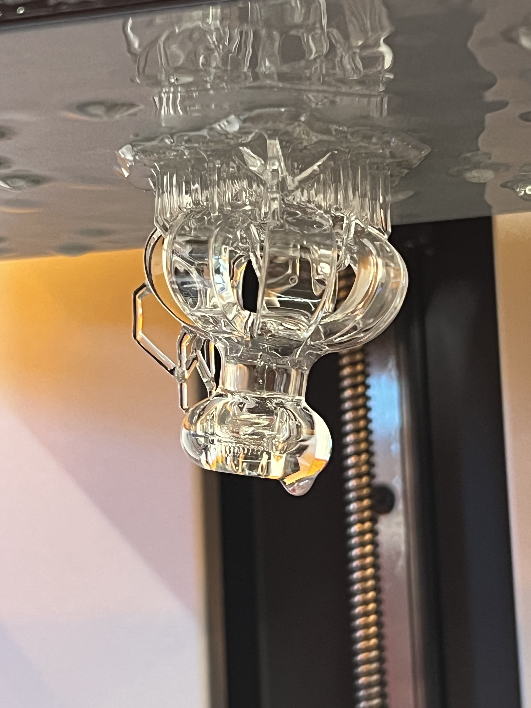

Random Positioning Machine (RPM)
Machine capable of reproducing microgravity conditions (less than 0.01g in 20 min operation) via two nested, independently rotating frames.
M.S. Mechanical Engineering at UC San Diego with experience across mechatronics, biomedical devices, and mechanical testing. I bridge CAD, prototypes, analysis, and validation to move ideas into reliable hardware.
Projects that show end-to-end mechanical design, prototyping, controls, and validation.
Machine capable of reproducing microgravity conditions (less than 0.01g in 20 min operation) via two nested, independently rotating frames.

Prototyped a patient-friendly flexible pessary and applicator with clinicians; finalized for silicone injection molding and initial IRB clinical testing for a class 2 device.

Rebuilt a 9-foot diameter centrifuge to accurately reproduce launch and hypergravity acceleration profiles with higher fidelity and expanded operating envelope.

Designed and built a compact, autonomous buoy system for characterizing the near-shore surface wave direction and spectral content off of Scripps pier.
Rebuilt a WavepHOx ocean chemistry package for coastal monitoring, calibrating pH, salinity, and temperature sensors via multi-day tank tests. Derived and applied calibration coefficients and validated against factory coefficients. Performed field deployment in Mission Bay to validate system performance.
Implemented task-space trajectory generation and PI feedback control for a mobile manipulator performing pick-and-place tasks in CoppeliaSim. Wrote modular MATLAB code for screw-based kinematics, odometry propagation, and manipulability analysis, and evaluated stability and error dynamics under varied controller tuning.
Designed and operated a closed-loop, PID-controlled thermal bath to calibrate a Sea-Bird SBE37 CTD against a precision RTD reference. Tuned control gains to achieve ±0.01 °C stability and analyzed settling behavior and calibration accuracy over extended runs.
Developed a 2-D finite-difference CFD solver (MacCormack scheme) for compressible Navier-Stokes flow over a flat plate at Mach ~4. Included viscous stresses and heat conduction, capturing expected shock and boundary-layer behavior while prioritizing algorithmic transparency over black-box solvers.
Built a reusable MATLAB tool to evaluate shaft designs across parametric geometries and load cases by automatically computing critical sections and minimum factor of safety to enable rapid early-stage design iteration without one-off calculations.
Roles with sustained ownership across design, fabrication, testing, and technical communication.
Research engineering
Research Engineer — UC San Diego (MAE)Mechanical design
Mechanical Design Intern — UCSD Health (OBGYN)Organized for fast scanning by hiring managers and technical collaborators.
Open to product design, biomedical, R&D, and test engineering roles.